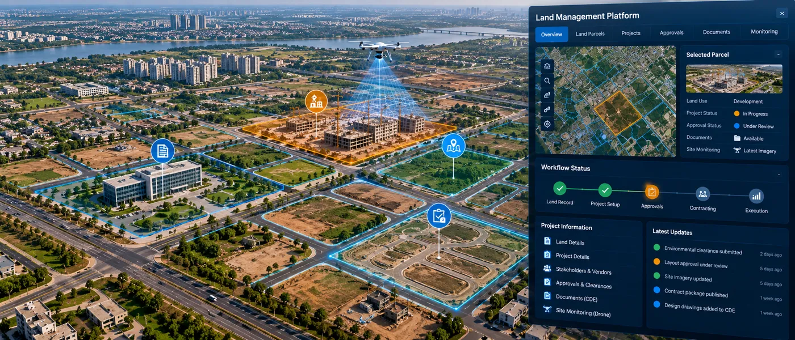

The Assignment
Managing land, projects and related administrative processes across multiple stakeholders can involve disconnected records, documents and approval workflows, making it difficult to maintain visibility and control.
The assignment involved developing an integrated GIS-enabled platform to bring together land information, project records and associated business processes within a common digital environment, supporting more transparent and efficient land and project management.
Our Approach
CS TECH Ai developed an integrated digital platform combining GIS with workflow and information-management capabilities to provide a unified view of land and related project activities.
The engagement included:
- Integration of land records and spatial information within a GIS-enabled platform
- Management of project-related information and records
- Integration of vendor information
- Digitization of approval processes and workflows
- Centralized management of project documents
- Development of dashboards for monitoring and management visibility
- Drone-based monitoring to support visibility of site and project conditions
- Role-based workflows for different stakeholders
- Integration of spatial and non-spatial information
- Creation of an end-to-end digital environment for land and project management
The platform connected location-based information with projects, vendors, approvals and documents, enabling stakeholders to access and manage related information through a common system.